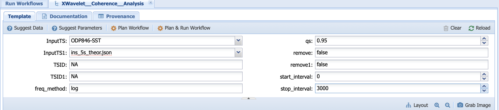

Reproducing a scientific workflow with paleoTS¶
In this example, we will reproduce one of the studies illustrating the use of Pyleoclim. This study was presented in a Jupyter Notebook, which can be found here. Note that this notebook is fully executable through MyBinder.
The notebook demonstrates the use of spectral and wavelet analysis using a sea surface temperature reconstruction from Site ODP846 in the Eastern Equatorial Pacific. The goal is to explore the periodicities present in the 5-million years record and explore any coherency between insolation and the sea surface temperature record.
We strongly encourage you to learn how to use PaleoTS using this tutorial before diving into the scientific application.
Data¶
The record is described in Mix et al. (1995), Shackleton et al. (1995), and Lawrence et al. (2006). The age model for the core was obtained by aligning the benthic \(\delta^{18}O\) to the benthic stack of Lisiecki and Raymo (2005, LR04) using the HMM-Match algorithm developed by Lin et al. (2014) as used by Khider et al. (2017). The latter is a probabilistic method that generates an ensemble of 1000 possible age models compatible with the chronostratigraphic constraints.
The dataset is stored in the Linked Paleo Data Format (LiPD, McKay and Emile-Geay (2016)) and available in PaleoTS (ODP846.Lawrence.2006.lpd).
Data exploration¶
Our first task is to extract the sea surface temperature record from the LiPD file. To do so, we will be using the ExtractTsfromLiPD workflow, accessible through Analysis -> Run workflow, with the following parameters:
Here, the mode parameter corresponds to the type of data in the LiPD file (chron or paleo) and number corresponds to the variable number. From the original study, we know that the sea surface temperature record is number 8.
Click on Plan and Run Workflow and head over to Analysis -> Access Runs. Select the ExtractTsfromLiPD and next to output, click on the save icon to put the data into the system:
Next, let’s create a simple dashboard for our series. Go to Analysis -> Run workflow and select the LiPDDashboard workflow with the following inputs:
Click on Plan and Run Workflow, then head over to Analysis -> Access Runs. The dashboard is presented here:
Spectral analysis¶
Our next task is to run the SpectralAnalysis workflow on our ODP846 sea surface temperature record. Go to Analysis -> Run Workflow. Select the SpectralAnalysis workflow and use the following parameters:
Select Plan and Run Workflow to run all possible combinations.
Wavelet analysis¶
Our next task is to run the WaveletAnalysis workflow on our ODP846 sea surface temperature record. Go to Analysis -> Run Workflow. Select the WaveletAnalysis workflow and use the following parameters:
Select Plan and Run Workflow to run all possible combinations.
Cross-wavelet analysis¶
For the cross-wavelet analysis, let’s take the coherence between the ODP846 sae surface temperatures and insolation at 5S determined from orbital variations. This can be computed using the Climlab package. Go to Analysis -> Run Workflow. Select the XWavelet_Coherence_Workflow and use the following parameters:
Select Plan and Run Workflow to run all possible combinations.
Results¶
The workflows presented above resulted in thousands of runs. We analyzed the results and drew conclusions in the following Jupyter Notebook, which can be used as an example on how to parse runs from PaleoTS.
References¶
Khider, D., Ahn, S., Lisiecki, L. E., Lawrence, C. E., & Kienast, M. (2017). The Role of Uncertainty in Estimating Lead/Lag Relationships in Marine Sedimentary Archives: A Case Study From the Tropical Pacific. Paleoceanography, 32(11), 1275-1290.
Lawrence, K. T., Liu, Z. H., & Herbert, T. D. (2006). Evolution of the eastern tropical Pacific through Plio-Pleistocene glaciation. Science, 312(5770), 79-83.
Lin, L., Khider, D., Lisiecki, L. E., & Lawrence, C. E. (2014). Probabilistic sequence alignment of stratigraphic records. Paleoceanography, 29(976-989), 976-989.
Lisiecki, L. E., & Raymo, M. E. (2005). A Pliocene-Pleistocene stack of 57 globally distributed benthic δ18O records. Paleoceanography, 20(PA1003).
McKay, N. P., & Emile-Geay, J. (2016). Technical Note: The Linked Paleo Data framework – a common tongue for paleoclimatology. Climate of the Past, 12, 1093-1100.
Mix, A. C., J. Le, and N. J. Shackleton (1995), Benthic foraminiferal stable isotope stratigraphy from Site 846: 0–1.8 Ma, Proc. Ocean Drill. Program Sci. Results, 138, 839–847.
Shackleton, N. J., Hall, M. A., & Pate, D. (1995). Pliocene stable isotope stratigraphy of ODP Site 846. Proc. Ocean Drill. Program Sci. Results, 138, 337-356.